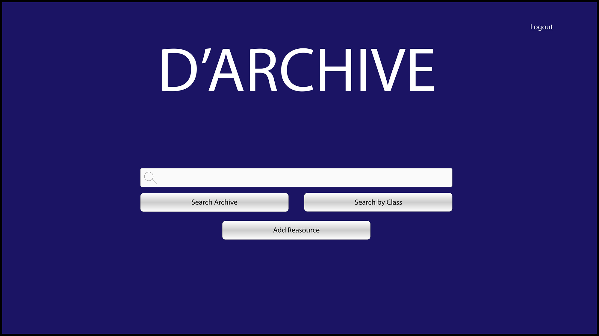

D'Archive
Academic Work
Role: Solo
Emphasis: User Centered Design
Time: 12 Weeks
Overview
The aim of this project was to create a product that would allow UX students find vetted resources that can help them learn as they further their academic and career goals. I took this project from generative research to usability testing of a prototype on my own. By the end of the project, I was able to leverage their prior experience with a similar product to help my users adapt while also learning about their mental models.
Process
A student in the User Experience Design program at Austin Community College has only about 4.5 months of total class time to learn a wide variety of skills, tools and methodologies. Meanwhile, a google search of UX resources brings up 376 million results and increasing. A student needs to sift through all of the information to find verified resources to help stay on top of it all and there is no way they could do it in such a short amount of time.This was the problem my professor brought to me. I had 4 weeks to come up with a solution and create a low fidelity wireframes.
The first step was to do some generative research. There were three big questions that needed to be answered: what are they looking for, how are they looking for it, and what are they doing with it. After the interviews, I took the data and put it into an empathy map. The insight that arose proved to be interesting. All of the students looked for information that would help them complete assignments. Sometimes it was articles on how to use a software, other times it was images for inspiration. They were finding these resource through Google and when they were done with them, a lot of the times they would never use them again. A lot of the students wanted to share what they found but were afraid they would be bothering people if they sent the resources to everyone in an email. They want to help their peers, they just want to do it without annoying others So whatever solution I came up with, it had to help address this fear.

Empathy Map
Next step was to ideate some solutions. I used crazy eight and came up with three ideas. Of the three, the archive system can address the fear the students have about sharing. The idea is to model the archive after the ones many four year universities use but instead of the university adding the resources, it’s the students who are adding the resources to the system. This means the students can share what they find with the rest of the program without having to bother them. And so D’Archive was born
Crazy Eights Results: UX Archive (left), UX Wiki (center), UX Social Media (Right)
So the two big features of the archive are searching for a resource and adding a resource. This is where I put all of my efforts when it came time to make the wireframe. I created a user flow to help me plan out all the steps to the successfully finding and adding resources.

User Flow
After that I sketched a low fidelity wireframe. Once it was ready I had a user test it for me and found a couple of minor tweaks in the adding resource portion. After fixing it, I presented my findings and solution to my professor. She gave me a few suggestions and I was ready to move on to making mid-fidelity and high fidelity mockups for two weeks. Another couple of iterations and a couple of critiques and I was ready to move to usability testing with more users.
Low Fidelity (left), Mid-Fidelity (center), and High Fidelity (right) screens.
I had six weeks to plan and conduct a usability test. The goal of the test was to see if my design matched the users mental models. I ran five sessions with users and discovered two big insights. The first was that the users did not use the Search by Class feature this was for multiple reasons but the big one was that people didn’t know how it would work because they didn’t know what was meant by class. Mind you this was with the knowledge that D’Archive was used to find resources for class assignments. The second finding was that the Tag system we had made our users self conscious about their age. When we did our initial testing with the wireframe, our users were younger and used to seeing tags in social media. Our new testers were older and weren’t on social media. This revelation lead me to have to rethink the tag system.
Outcome
At the end of this project, I had a deeper understanding of how students look for resources to help with their education. Given this information, my design was able to leverage their preexisting knowledge as well as their desire to share. The next steps are to fix the issues discovered in usability testing and test those new changes.
Retrospective
A lot of things went well with this project despite the limited number of available users and the short period of time. My users gave me a lot of good feedback and my insights from the Empathy Map allowed guided decisions on features. My User flow was also a great asset in determining features. I would like to update and test my High-fidelity one more time. I would also like to get more users and even identify any secondary users I overlooked.
It is important to note that while my users liked how my product worked, I don’t think I could legally make it. The resources being added likely have ads on the original source (like on a blog or on youtube), and this would circumvent those ads. Also given that the EU passed Article 13, which requires platforms to be strict in preventing the unauthorized use of copywritten material, the school could get in trouble if such material is added as a resource. Future iterations would need to address this very big issue.